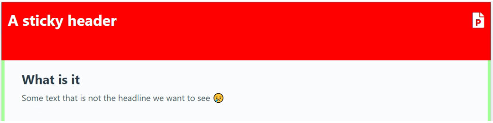
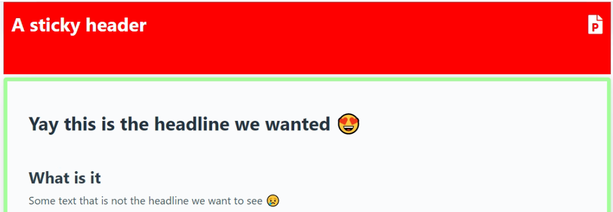

scroll-margin-top and sticky headers
2023-02-02
A page we're working with is quite long so we include anchor links at the top to get to the section that you're interested in.
<a href="#someSection">Some section
<!-- A lot of other things...-->
<article id="someSection">...</article>
The page also includes a sticky header and when going to the anchor link that header is placed on top of the header of the section

Enter scroll-margin-top
Luckily there's a css property to solve this very thing called scroll-margin-top where you can instruct the browser how much space it should leave above your anchor link. For instance:
<a href="#someSection">Some section
<!-- A lot of other things...-->
<article id="someSection" style="scroll-margin-top: 140px;">...</article>
